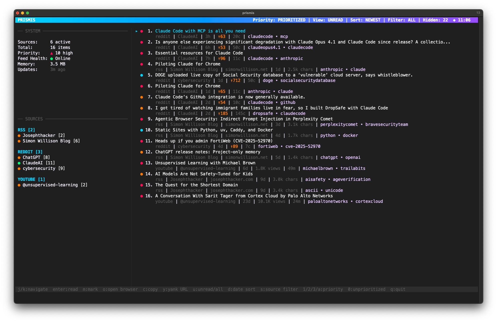

Fetches and reads your RSS, Reddit, and YouTube sources on your schedule.
AI prioritizes content based on YOUR interests and the models you choose.
Vim-style command mode with Fabric integration for deeper AI content analysis.
Blazing-fast terminal interface.

Prismis is a terminal-based interface designed for desktop use.
Experience the full TUI on your computer.
Press : to enter command mode - just like vim
:mark :favorite :copy :report :prune :help - All with tab completion.
:report generates AI summaries of your content. Markdown format, saved automatically.
:fabric pipes content to Fabric AI for analysis. Extract wisdom, summarize, analyze claims.
Native Go binary starts instantly. No browser, no loading screens.
SQLite database stays on your machine. Only content goes to LLM for analysis.
LLM analyzes content against your personal context.md file.
Navigate everything from your keyboard. Built for flow state.
RSS, Reddit, YouTube, Papers. All unified in one interface.
Desktop alerts only for HIGH priority content. Never miss what matters.
Python daemon fetches and analyzes content while you work.
git clone https://github.com/nickpending/prismis
cd prismis
make installprismis-cli source add https://news.ycombinator.com/rss
prismis-cli source add reddit://rust
prismis-cli source add youtube://UC9-y-6csu5WGm29I7JiwpnAcat > ~/.config/prismis/context.md << EOF
## High Priority Topics
- AI/LLM breakthroughs
- Rust systems programming
## Medium Priority Topics
- React/Next.js updates
EOFprismis200+ AI patterns with tab completion. Extract wisdom, summarize, analyze claims - all from command mode.
Generate daily, weekly, or custom period reports with :report. Markdown format saved to file.
Choose OpenAI, Anthropic Claude, Groq, or local Ollama. Switch providers without changing workflow.
Model Context Protocol server for AI agents to query your curated content programmatically.
Full-text search across all historical content with AI-powered semantic search capabilities.
Custom fetchers, analyzers, and workflows. Extend Prismis with your own patterns and integrations.
The vision: Prismis becomes your content intelligence layer.
Not just for reading, but for feeding your entire AI ecosystem.